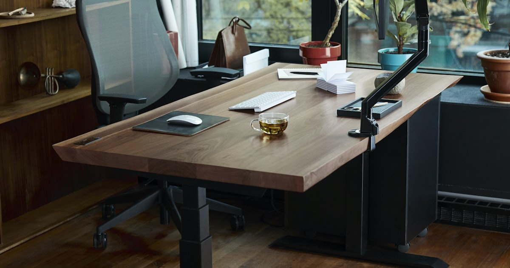

Höhenverstellbare Schreibtische im Vergleich: Aufsatz, Kurbel oder elektrisch?

Foto: Unsplash
Abwechselnd sitzen und stehen entlastet den Rücken spürbar – aber der Weg dorthin kostet zwischen 80 und 500 Euro, je nachdem, welche Lösung du wählst. Diese Kaufberatung vergleicht die drei Wege zum Steh-Sitz-Arbeitsplatz und zeigt, für wen sich welcher lohnt.
Die drei Lösungen im Überblick
| Lösung | Prinzip | Für wen | Preis |
|---|---|---|---|
| Aufsatz | Aufsatz auf den vorhandenen Tisch, manuell hochklappbar | Testphase, kleines Budget, wenig Platz | ca. 80–150 € |
| Kurbel | Kompletter Tisch, Höhenverstellung per Handkurbel | Seltene Wechsel (1–2× am Tag), Budget-Fokus | ca. 150–250 € |
| Elektrisch Empfehlung | Kompletter Tisch, Verstellung per Motor, Memory-Tasten | Häufige Wechsel, Vollzeit-Home-Office | ca. 200–450 € |
Schreibtischaufsatz
ca. 80–150 €Ein höhenverstellbarer Aufsatz verwandelt den vorhandenen Tisch in einen Steh-Arbeitsplatz – ohne Möbelkauf, ohne Aufbau. Ideal, um erst einmal zu testen, ob dir Steharbeit überhaupt liegt, bevor du in einen kompletten Tisch investierst.
Stärken
- Günstigster Einstieg, vorhandener Tisch bleibt nutzbar
- Sofort einsatzbereit, kein Aufbau
Schwächen
- Reduziert die Arbeitsfläche spürbar
- Tastatur-Ablage oft wackeliger als eine echte Tischplatte
* Affiliate-Link
Kurbel-Schreibtisch
ca. 150–250 €Mechanisch per Kurbel verstellbare Tische sind robust und brauchen keinen Stromanschluss. Der Haken: Ein Wechsel dauert 30–60 Sekunden Kurbeln – in der Praxis führt das dazu, dass viele Nutzer schlicht seltener wechseln. Wer den Tisch morgens einmal einstellt und dann sitzen bleibt, verschenkt den eigentlichen Vorteil.
Stärken
- Kein Stromanschluss nötig, wenig Verschleißteile
- Günstiger als elektrische Modelle bei gleicher Stabilität
Schwächen
- Wechsel kostet Zeit und Überwindung – wird im Alltag oft weggelassen
- Keine Memory-Positionen
* Affiliate-Link
Elektrischer Schreibtisch
ca. 200–450 € Unsere EmpfehlungAuf Knopfdruck in wenigen Sekunden von Sitz- auf Stehhöhe – und mit Memory-Tasten merkt sich der Tisch deine Positionen. Genau diese Reibungslosigkeit entscheidet darüber, ob du wirklich mehrmals täglich wechselst. Beim Kauf lohnt der Blick auf Hubbereich, Tragkraft und ob die Tischplatte im Preis enthalten ist – manche Angebote betreffen nur das Gestell.
Stärken
- Wechsel in Sekunden – wird im Alltag tatsächlich genutzt
- Memory-Funktion für exakte Wiederholpositionen
Schwächen
- Höchster Preis, braucht eine Steckdose in Reichweite
- Billig-Gestelle wackeln auf maximaler Höhe – auf Stabilität achten
* Affiliate-Link
Checkliste: Darauf kommt es beim Kauf an
- Hubbereich: Stehhöhe = Ellenbogenhöhe im Stehen; bei Körpergröße über 185 cm auf die maximale Höhe achten
- Mit oder ohne Platte: viele elektrische Angebote sind nur das Gestell – Beschreibung genau lesen
- Tragkraft: Monitore, PC und Zubehör zusammenrechnen, Reserve einplanen
- Stabilität: Bewertungen gezielt nach „Wackeln" auf Stehhöhe durchsuchen
- Memory-Tasten: kleiner Aufpreis, großer Alltagsnutzen
Häufige Fragen
Was kostet ein guter höhenverstellbarer Schreibtisch?
Ein Aufsatz für den vorhandenen Tisch kostet ca. 80–150 €, ein Kurbel-Schreibtisch 150–250 € und ein elektrischer Schreibtisch mit Memory-Funktion 200–450 €. Achtung: Manche elektrischen Angebote enthalten nur das Gestell ohne Tischplatte.
Lohnt sich elektrisch gegenüber der Kurbel?
Meistens ja: Der Wechsel per Knopfdruck dauert Sekunden, per Kurbel 30–60 Sekunden. In der Praxis führt die Kurbel dazu, dass viele Nutzer seltener wechseln – und genau der regelmäßige Wechsel ist der eigentliche Gesundheitsvorteil.
Wie hoch sollte der Tisch zum Stehen eingestellt sein?
Die Tischplatte sollte im Stehen auf Ellenbogenhöhe liegen, sodass die Unterarme locker im rechten Winkel aufliegen. Bei einer Körpergröße über 185 cm vor dem Kauf die maximale Höhe des Modells prüfen.
Fazit
Wer unsicher ist, startet mit einem Aufsatz und testet die Steharbeit risikoarm. Wer schon weiß, dass er dauerhaft im Home-Office arbeitet, fährt mit einem elektrischen Tisch am besten – die Kurbel-Variante ist auf dem Papier günstiger, scheitert aber oft am Alltags-Faktor. Entscheidend ist nicht das Möbel, sondern dass du tatsächlich regelmäßig wechselst.